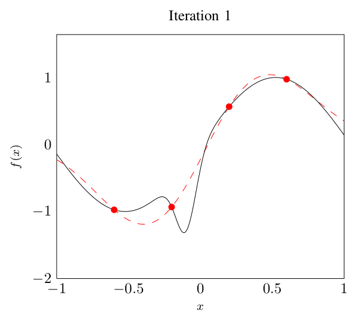
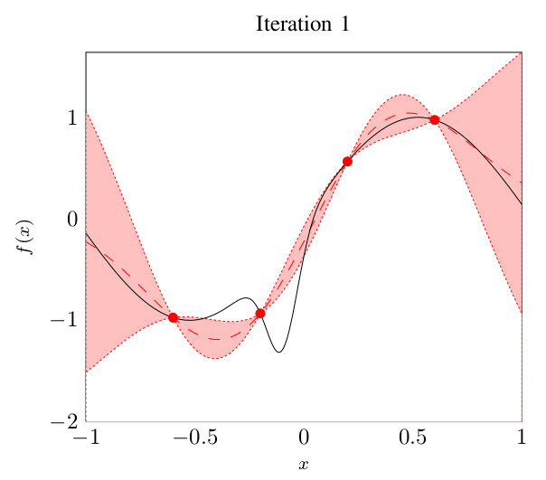

The Problem


Evaluation of \(L\) is expensive
Evaluation of \(\text{EL}\) is really expensive
Find the minimum of \(\text{EL}\) in as few evaluations of \(L\) as possible
Exhaustive calculation of surface L is not feasible. Evaluation of L is expensive, since we need the final state (S_{T}). Gaussian probability distribution fits interesting input SNRs for a given SNR loss. The minimum shown in EL plot is the one we want to find. Large number of x required to accurately model the world.
Convergence Behavior

350 Evaluations of \(L\)
3 experiments for different target SNR losses
Bayesian Optimization
Quantify uncertainty using probability distributions
Optimal experimental design




Model of EL is based on Gaussian Processes. Gaussian probability distributions at each point in the solution space (so a mean and a standard deviation). The probability distributions model the uncertainty of our model of EL. The example illustrates the concept, it is not an actual EL.
Optimization Strategy

Conceptual strategy, how these steps are implemented follows. Stop if we think our model is accurate enough.
Convergence Behavior

30 Evaluations of \(L\)
Same experiment as before, but repeated 10 times for each experiment. Uses 10 evaluations of L to create initial model. Non-monotonicity is caused by adjusting the model to the observations (temporary overfit).